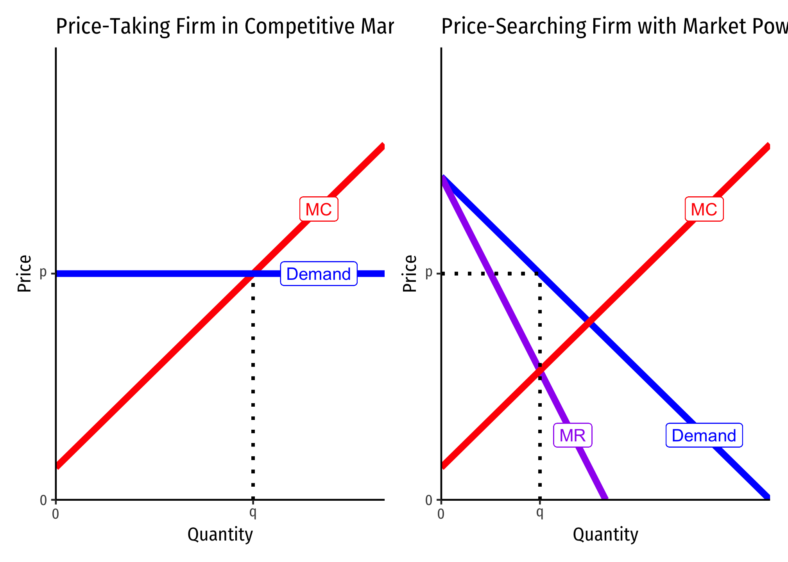
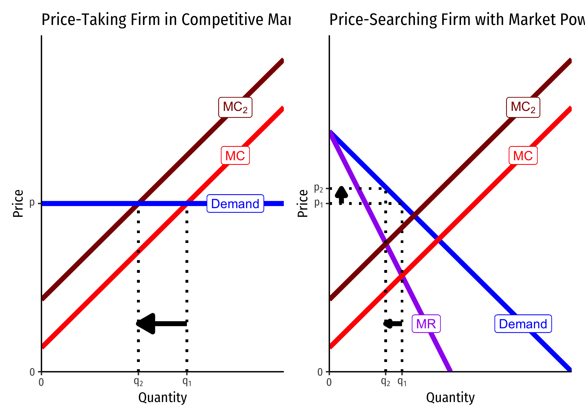
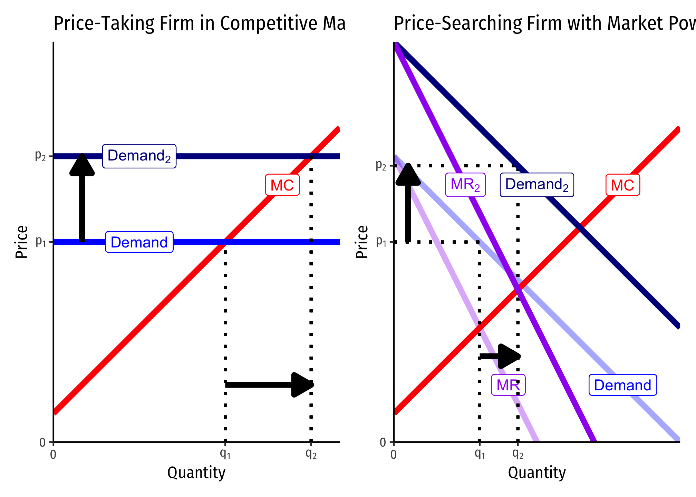
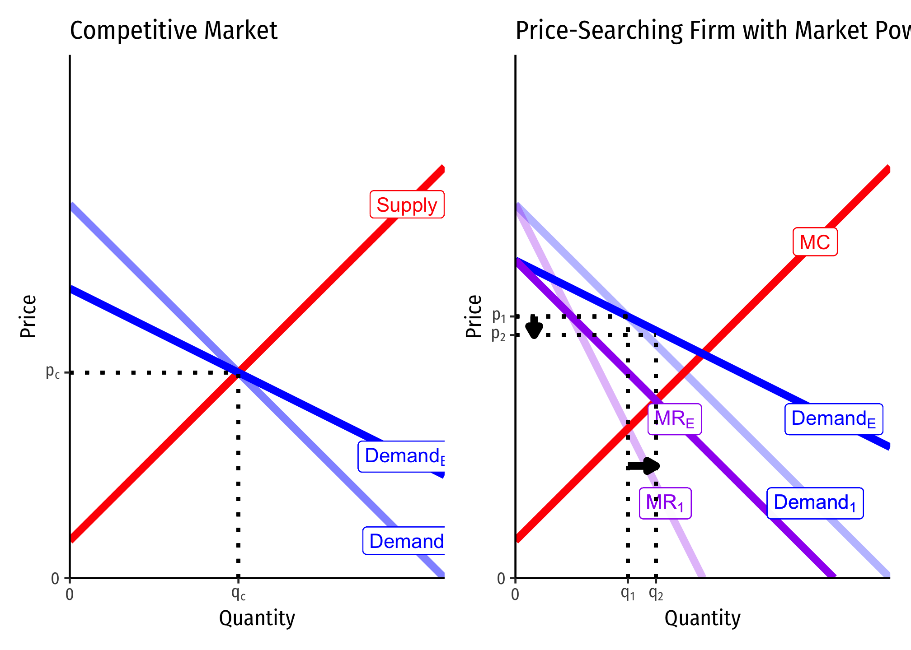

4.1 — Modeling Firms With Market Power — Appendix
Monopolists Only Produce Where Demand is Elastic: Proof
Let’s first show the relationship between \(MR(q)\) and price elasticity of demand, \(\epsilon_D\).
\[\begin{align*} MR(q) &= p+\bigg(\frac{\Delta p}{\Delta q}\bigg)q && \text{Definition of } MR(q)\\ \frac{MR(q)}{p} &= \frac{p}{p}+\bigg(\frac{\Delta p}{\Delta q}\bigg) \frac{q}{p} && \text{Dividing both sides by } p\\ \frac{MR(q)}{p} &= 1+\underbrace{\bigg(\frac{\Delta p}{\Delta q}\times \frac{q}{p} \bigg)}_{\frac{1}{\epsilon}} && \text{Simplifying}\\ \frac{MR(q)}{p} &= 1+\frac{1}{\epsilon_D} && \text{Recognize price elasticity } \epsilon_D=\frac{\Delta q}{\Delta p} \times \frac{p}{q}\\ MR(q) &= p\bigg(1+\frac{1}{\epsilon_D}\bigg) && \text{Multiplying both sides by }p\\ \end{align*}\]
Remember, we’ve simplified \(\epsilon_D = \frac{1}{slope} \times \frac{p}{q}\), where \(\frac{1}{slope} = \frac{\Delta q}{\Delta p}\) because on a demand curve, \(slope = \frac{\Delta p}{\Delta q}\).
Now that we have this alternate expression for \(MR(q)\), lets assume \(MC(q) \geq 0\) and set them equal to one another to maximize profits:
\[\begin{align*} MR(q) &= MC(q)\\ p(1+\frac{1}{\epsilon_D}) & = MC(q)\\ p(1-\frac{1}{|\epsilon_D|}) & = MC(q)\\ \end{align*}\]
I rearrange the last line only to remind us that \(\epsilon_D\) is always negative!
Now note the following:
- If \(|\epsilon_D| < 1\), then \(MR(q)\) is negative. Since \(MC(q)\) is assumed to be positive, it cannot equal a negative \(MR(q)\), hence this is not profit-maximizing.
- If \(|\epsilon_D| = 1\), then \(MR(q)\) is 0. Only if \(MC(q)\) is also 0 is this profit-maximizing.
- If \(|\epsilon_D| > 1\), then \(MR(q)\) is positive. It can equal a positive \(MC(q)\) to be profit-maximizing.
Hence, a monopolist will never produce in the inelastic region of the demand curve (where \(MR(q)<0)\), and will only produce at the unit elastic part of the demand curve (where \(MR(q)=0)\) if \(MC(q)=0\). Thus, it generally produces in the elastic region where \(MR(q)>0\).
See the graphs on slide 33.
Derivation of the Lerner Index
Marginal revenue is strongly related to the price elasticity of demand, which is \(E_{D}=\frac{\Delta q}{\Delta p} \times \frac{p}{q}\)1
We derived marginal revenue (in the slides) as: \[MR(q)=p+\frac{\Delta p}{\Delta q}q\]
Firms will always maximize profits where:
\[\begin{align*} MR(q)&=MC(q) && \text{Profit-max output condition}\\ p+\bigg(\frac{\Delta p}{\Delta q}\bigg)q&=MC(q) && \text{Definition of } MR(q)\\ p+\bigg(\frac{\Delta p}{\Delta q}\bigg) q \times \frac{p}{p}&=MC(q) && \text{Multiplying the left by } \frac{p}{p} \text{ (i.e. 1)}\\ p+\underbrace{\bigg(\frac{\Delta p}{\Delta q}\times \frac{q}{p} \bigg)}_{\frac{1}{\epsilon}} \times p &=MC(q) && \text{Rearranging the left}\\ p+\frac{1}{\epsilon} \times p &=MC(q) && \text{Recognize price elasticity } \epsilon=\frac{\Delta q}{\Delta p} \times \frac{p}{q}\\ p &=MC(q) - \frac{1}{\epsilon} p && \text{Subtract }\frac{1}{\epsilon}p \text{ from both sides}\\ p-MC(q) &= -\frac{1}{\epsilon} p && \text{Subtract }MC(q) \text{ from both sides}\\ \frac{p-MC(q)}{p} &= -\frac{1}{\epsilon} && \text{Divide both sides by }p\\ \end{align*}\]
The left side gives us the fraction of price that is markup \(\left(\frac{p-MC(q)}{p}\right)\), and the right side shows this is inversely related to price elasticity of demand.
Firms With Market Power vs. Competitive Firms’ Responses to Market Changes
Consider a firm in a competitive market (left) and a firm with market power (right):

An Increase in Firms’ Marginal Cost

A competitive firm responds by only changing its output \(q^\star\) (since it cannot control price), whereas the firm with market power changes both its \(p^\star\) and \(q^\star\).
A Shift in Market Demand

Both firms change \(p^\star\) and \(q^\star\), but there is a much smaller change in \(q^\star\) for the monopolist.
A Change in Price Elasticity of Demand

For the competitive market on the left, there is no change in \(q^\star\) or \(p^\star\) for the industry! On the right, the monopolist will lower (raise) \(p^\star\) and raise (lower) \(q^\star\) as demand becomes more (less) elastic!
Footnotes
I sometimes simplify it as \(E_{D}=\frac{1}{slope} \times \frac{p}{q}\), where “slope” is the slope of the inverse demand curve (graph), since the slope is \(\frac{\Delta p}{\Delta q} = \frac{rise}{run}\).↩︎